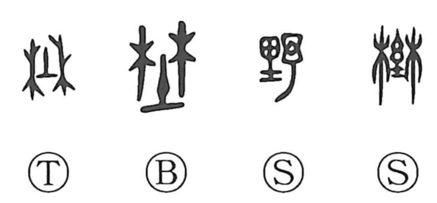

野

Kun: no | On: ya, sho
field ・ countryside ・ plains ・ wild
Explanation
野 is a phonetic formation with 予 as its sound element. The earlier 埜 combines a grove of trees with the sacred earth-place beneath them: a woodland shrine. Oracle-bone inscriptions already have this grove form, and bronze writing also uses it in a place name.
里 belongs to the cultivated land and its field shrine, whereas 埜 concerns the grove. The later writing 野 brings the land element together with its phonetic 予. These forms place the word in the country beyond the urban centre.
From the outlying countryside come open land and rural settlements. In contrast with the cultivated manners of the capital, 野 can mean plain, rustic, rough, or unpolished. Applied to public life, 在野 describes being outside official office.